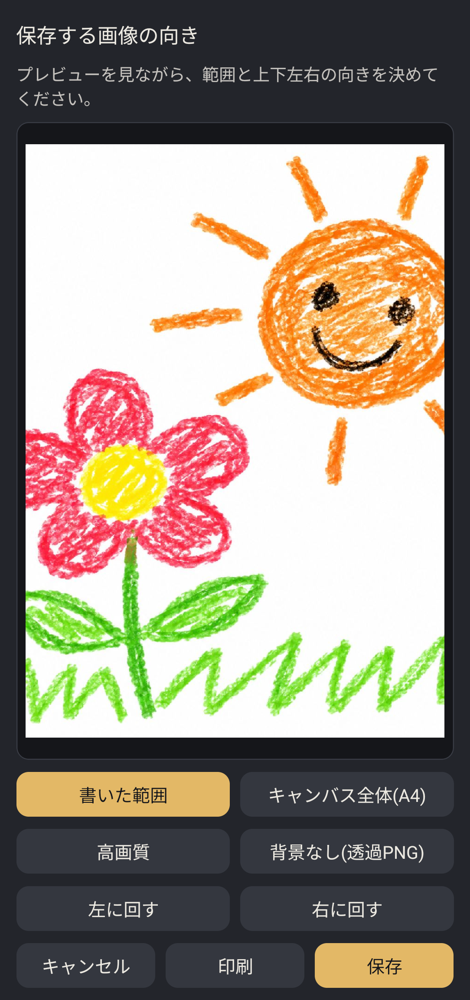

📖 画像の保存と印刷画面
ツールバーの下向き矢印アイコン（上から7番目）をタップすると、保存プレビュー画面が開きます。

保存範囲・画質・透過・向き（回転）を確認しながらワンタップで保存・印刷
⚙️ 保存オプションの使い分け
画面下部のボタンを使って、用途に合わせた最適な形式で書き出すことができます。
保存範囲
「書いた範囲」と「キャンバス全体(A4)」
- 書いた範囲: 余分な白紙余白を自動でカットし、描かれた絵や文字の範囲だけをぴったり切り出して保存します。SNSへのシェアやアイコン、スタンプ作りに便利です。
- キャンバス全体(A4): A4用紙の縦横比に合わせてキャンバス全体を保存します。ノートとしてページ全体を残したいときや、印刷時に最適です。
画質と形式
「高画質」と「背景なし(透過PNG)」
- 高画質: より高解像度で精細な画像として出力します。大判での印刷や拡大表示におすすめです。
- 背景なし(透過PNG): キャンバスの背景を透過させて、線画や塗りの部分だけを保存します。メッセージアプリのスタンプや、他の画像編集アプリでの素材合成に重宝します。
向きの調整
「左に回す」「右に回す」
プレビューを見ながら90度ずつ回転させることができます。横向きで描いた絵を正しい向きに合わせてから写真フォルダに保存できます。
出力
「保存」と「印刷」
- 保存: 端末の写真ギャラリー（カメラロール）に画像ファイルとして保存されます。
- 印刷: Android標準の印刷メニューが開き、ネットワーク接続されたプリンターへ直接印刷できます。
⚙️ アプリの設定メニュー
ツールバーの歯車アイコンをタップすると、アプリの各種設定を行うモーダル画面が開きます。
スキン（テーマ配色）の変更
お好みのカラーテーマにキャンバスやUIの配色を着せ替えられます。
バックアップとデータの復元
大切な絵や設定を暗号化ファイルとして書き出し、機種変更時にも安全に引き継げます。
言語設定
日本語をはじめ、英語や中国語など多言語での表示にいつでも切り替えられます。
PREMIUM（プレミアムプラン）
広告非表示、人数無制限の共同編集、高画質・透過PNG書き出しなどを解放できます。